Services Cube Worker Manual
Copyright © 2018 Services Cube. All rights reserved.
Introduction
Overview
What is Services Cube
Services Cube is in the business of getting qualified field-based service providers for various services ranging from cleaning services, security needs, appliances repairs,gardening and so on. The Services Cube App for workers makes it easy for getting assigned jobs, managing your jobs and keeping track of all your hard work.
Most importantly, Services Cube will bring you close to your customers and it certainly will help to make your work more successful, rewarding, and under control.
In Services Cube,you can do the following, and more:
- Get assigned jobs in time based on your geographic location and job experience.
- Seamless job schedules in calendar form.
- Access case information such as case details, assets, job notes, etc.
- Instant conmunication with your customer via SMS or Phone.
- Get to your customer's location via real-time visual map.
- Be automatically notified of new case changes in an instant over push notifications, SMS, or email notifications.
- Asking for a leave has never been so easy. With simple clicks, off you go.
- You won't be worrying that you've forgotten about some vital notices anymore with our app's notices section.
Introduction
Logging In
Overview
To use Services Cube App, you must be a worker of our service companies. We will provide you with the necessary credentials to set up as a worker. Based on that, below are some brief instructions that will help you better understand how to log in.
Basic Steps
How to connect:
The Service Cube app can be downloaded from the corresponding app stores ( Google Play and Apple App Store ).
Note:
- Service Cube is supported on the following operating systems: iOS version 9.3 (and above) / Android version 4.4 (and above).
- Android users should make sure that their Google Play Services are updated.
- We recommend you update regularly to get new features and fixes.
- Please contact your device’s manufacturer with questions about updating your device’s operating system.
Logging in:
Once you have opened the Service Cube APP, the login screen appears. Provided that you already have the company code and original password, here's what you should do to sign in correctly. (Do notice that your email account is absolutely essential here if you ever forget your password or wanna change it.)
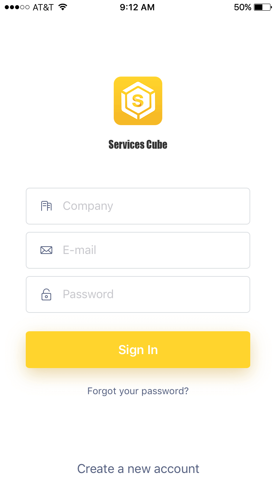Note:
- The first time you sign in, use the initial password sent to your email before.
- Input the "Company", "E-mail", "Password", and click Sign in. (See above)
- Please change your password immediately, after your first login.
Introduction
Quick Start: How to set up
Overview
To get you started, this manual will guide you through the basic setting up process step by step. Fear no more, our platform is easy and flexible to operate.
Basic Steps
- Step 1: Add basic info (Personal information and contact information)
- Step 2: Get to know cases calendar (Essential to manage your jobs)
- Step 3: Get to know cases details (Everything related to your assigned job)
- Step 4: Standard job workflow
Note:
These are the basic steps to get you started. Make sure to read through the following process so that you can start working correctly.
Step 1: Basic Info
Overview
Description
As you know, there is not enough information about you except for your E-mail address. The first thing you need to do is fill in all your basic information so that your admin can assign jobs to you according to that data.
Note:
- Basic info includes contact information and personal information.
- Contact info: Your address and phone number. Jobs will be assigned to you based on your geographic location and make sure your phone number is available.
- Personal info: Including avartar, name, gender, birthday and credentials.
Step 1: Basic Info
Contact Info
Overview
Given that jobs assigned to you are based on your geographic location, the address should be the place where you usually hang out or set off for work, for example, your home address. As for phone number, your customers can only get in touch with you if you've filled in the right phone number.
Basic Steps
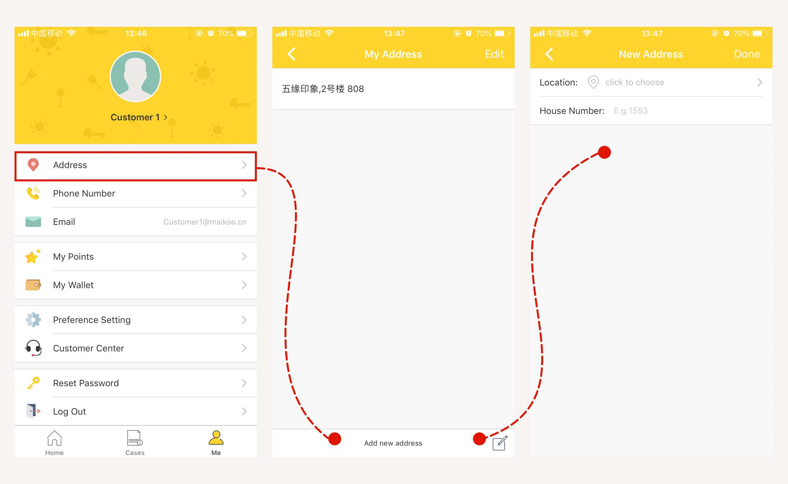 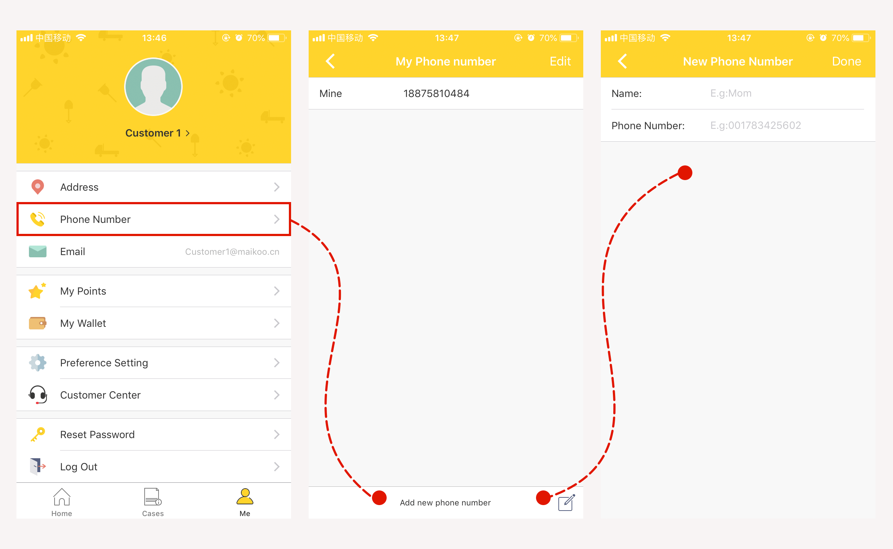
- Click "Me" from the tabbar.
- Click "Address" and then click the add button at the top-right screen. Fill in all the blanks and don't forget to click the "done" button at the top-right screen.
- Click "Phone Number" and then fill in all the blanks. Don't forget to click the "done" button at the top-right screen when you are finished.
Step 1: Basic Info
Personal Info
Overview
Some of the personal information is optional. However, the more detailed information you can provide, the better and faster the work will get done and the higher worker level you will be.
Basic Steps
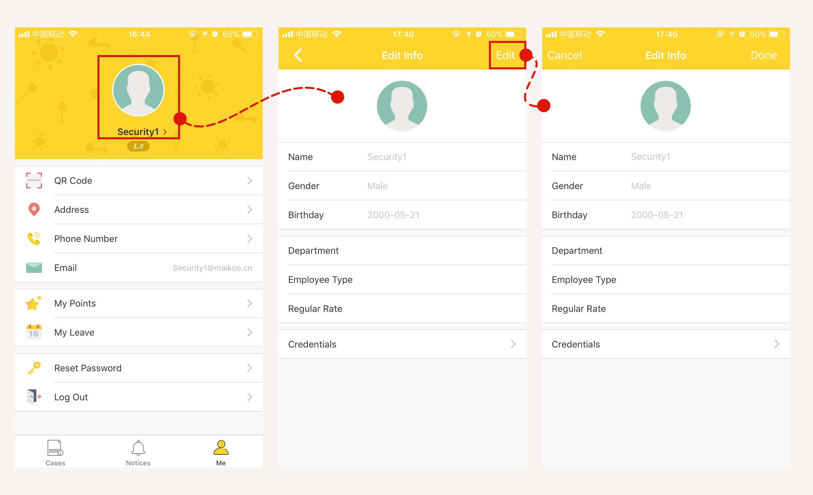 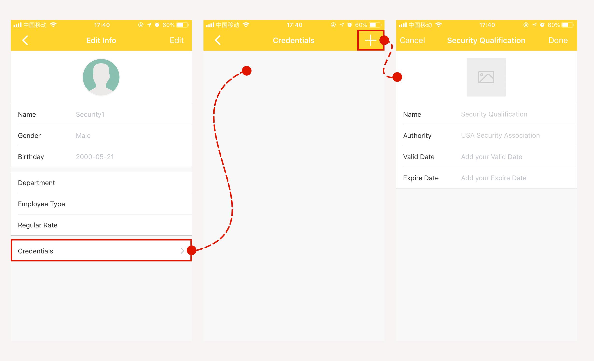
- Click "Me" from the tabbar.
- Click the avartar area at the top screen and then click the "Edit" button at the top-right screen. Fill in all the blanks and don't forget to click the "done" button at the top-right screen.
- Click "Credentials" and then click the add button at the top-right screen. Fill in all the blanks and click the "done" button at the top-right screen to save it.
Step 2: Cases calendar
Overview
Description
Service Cube is built for simplicity. We understand that complex scheduling can put you in a pickle but it's no longer a problem anymore with the Service Cube APP.
The "cases" screen defaults to today's case schedule in a timeline. From this view, you can see all of your case cards with different case status in the calendar form.
Contents
Calendar views
The calendar area contains the following:
- A left arrow button at the top-left corner.Tapping this button sets to the week / month before now.
- A right arrow button at the top-right corner.Tapping this button sets to the week / month after now.
- Pull down the screen reveals the case calendar on a month-by-month basis.
Case cards
Case cards view contains the following types of information:
- Case status (Case status changes through the whole process)
- Case number (Each case has its own unique Sequence Number)
- Case reporter (Customer who reported the case before)
- Case address (The place where the case will be performed)
- Case type (The specific type of service you required)
- Case frequency (Once / Real-time / Daily / Weekly / Monthly)
- Case start-time (Scheduled start time)
- Case end-time (Scheduled end time)
Cases map
Cases map contains the following:
- Cases location (All jobs will be displayed on the map)
Step 2: Cases calendar
Calendar Views
Overview
Located at the top of the case screen is the calendar area. You can see case schedules in different timeframes by simple clicks.
In the calendar, the days with red dots under are the days with scheduled cases. Tapping on a day with a red dot on it will display the cases scheduled for that day. Tapping on a case card will take the user to the relevant case details.
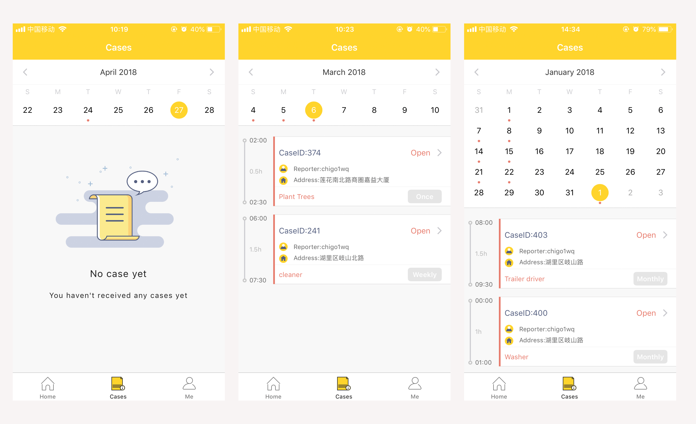Pull-to-Refresh
To refresh or reload content, the hand gesture to use is to pull-down the screen to monthly form first and keep pulling down till it refreshes.
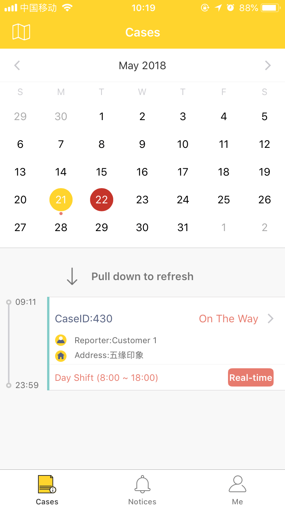Step 2: Cases calendar
Case Cards & Cases map
Overview
Case card is the summary of each case, displayed in a timeline. Tapping on a case card will take the user to the relevant Case details view.
- Cards are listed in chronological order except for the real-time cases.
- Different case status has different theme color.
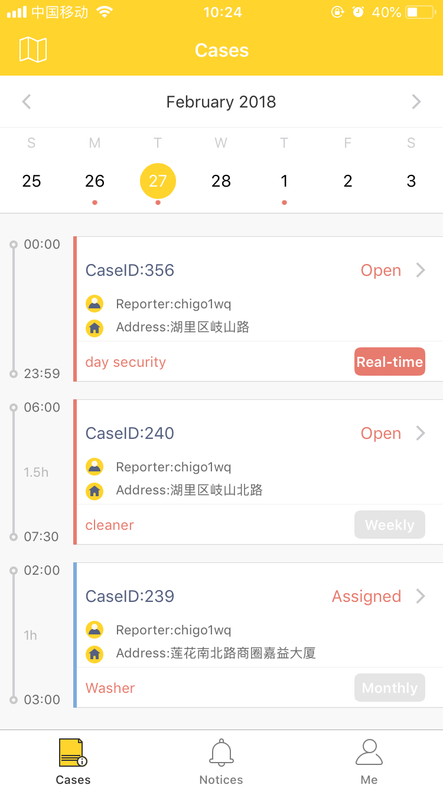
Case Status
Case status indicators are used throughout the mobile app to provide a visual indication of the job's current status. Below are the theme color of different case status:
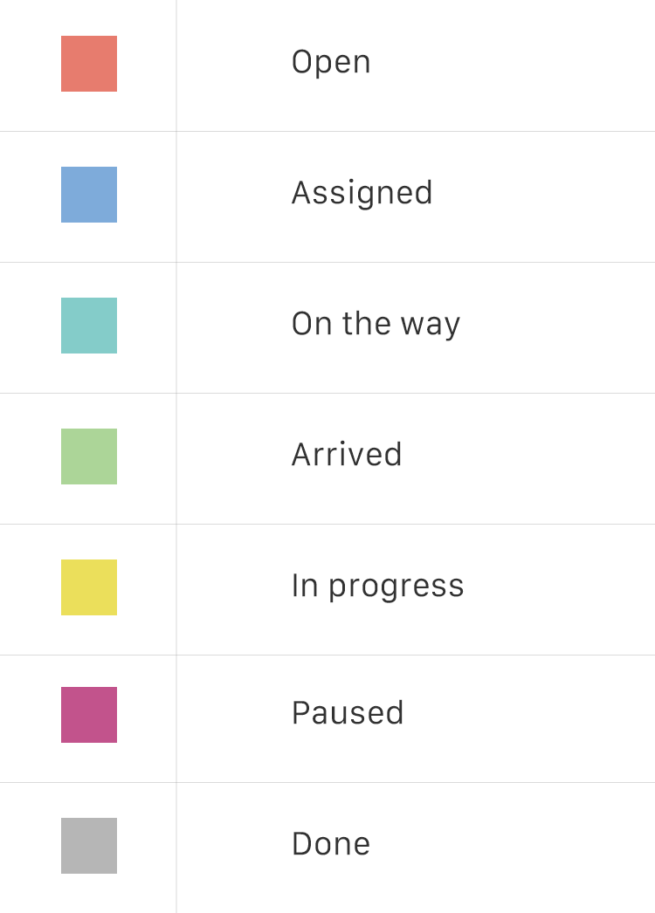Cases Map
All jobs will be displayed on the cases map. In this way, you'll have a better understanding of all cases' geographic location. Tapping on the top-left button will take you to the cases map right away.
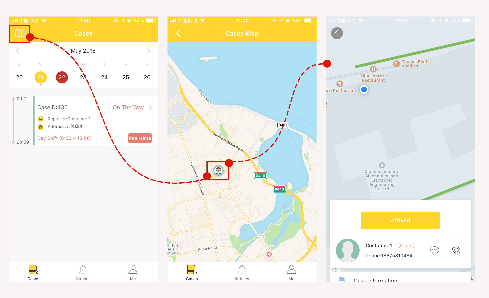Step 3: Case details
Overview
Description
You can easily access case details by tapping the case cards. The case details view shows the following information:
- Map & location (Get to your customer's exact location via real-time visual map)
- Action buttons (Manually progresses the job through various states)
- Contact (Instant conmunication with your customer via SMS or Phone)
- Case information (Name, address, phone, service type, time)
- Case progress (Keep records of all case status)
- Job notes (Make job notes about your case through the working process)
- Assets (Assets that will be used in this case)
Step 4: Workflow
Overview
Description
A case/job is a series of work taken by one or more workers. When the case/job is created, certain requirments need to be met such as time and duration, frequency, description and assets. The case/job is given a status through the entire job workflow so that the working progress is clear to customers and your admins.
The Standard Job Workflow
Once a case/job is assigned to you, you'll be informed immediately via push notification or SMS. So, do check your phone once a while for any changes. Also, all cases/jobs will be displayed in cases calendar. See Cases calendar .
When it's work time, it's your job to progress the job through various states manually. By tapping the action buttons in the case details page, you can use the buttons to step through each stage of the job as it is being completed. Meanwhile, case status indicators are used throughout the mobile app to provide a visual indication of the job's current status. See Case cards .
- On the way -- set off to the given address or location using the map.
- Arrived -- on arrival at the destination. (Clickable only when the distance between you and your customer is less than 100 meters.)
- Start -- start the job.
- Pause -- pause the job.
- Completed -- when the job has been finished.
The app will track all time periods as they progress through the job, for example, travel time. As you complete your work step by step, case status will also be updated.
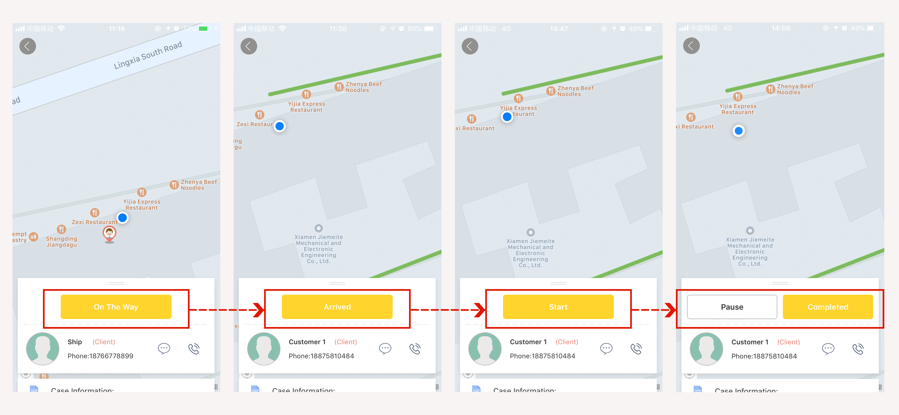